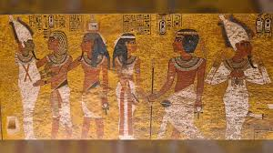

Overview: Ancient history explores the earliest civilizations and how they organized society, religion, and technology.
Focus: Egypt and Mesopotamia pioneered writing, law, and monumental architecture along the Nile and Tigris–Euphrates rivers.
Ancient Egypt and Mesopotamia developed early forms of government and religion. Their inventions, such as the wheel and writing systems, shaped future civilizations. Studying these societies reveals how human culture and technology evolved.
